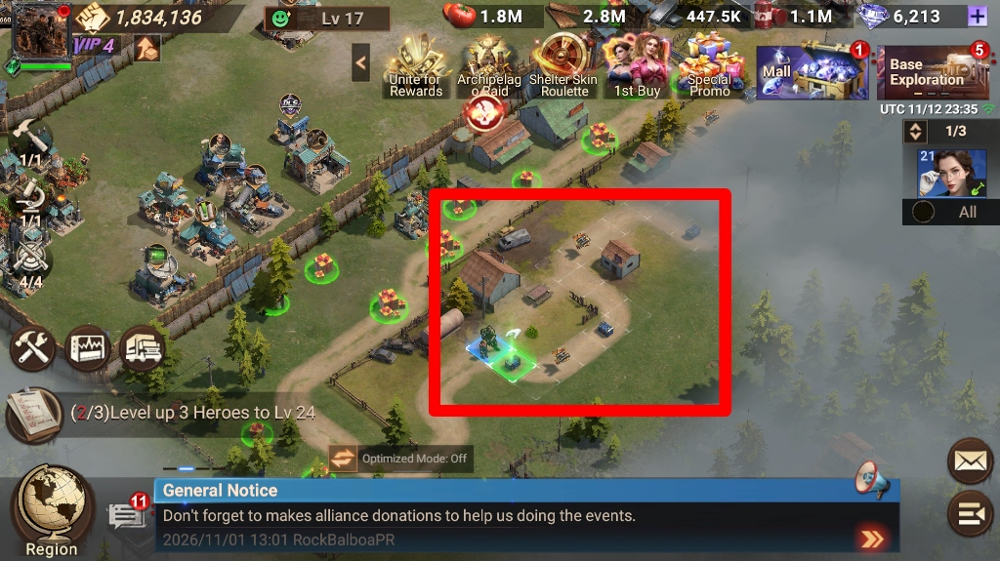
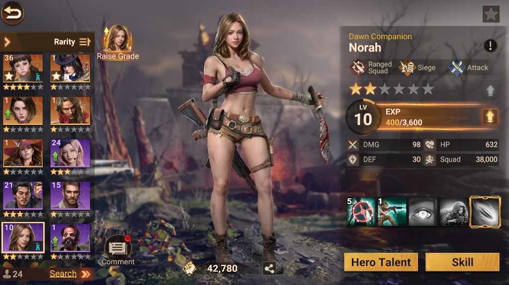
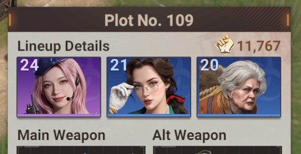
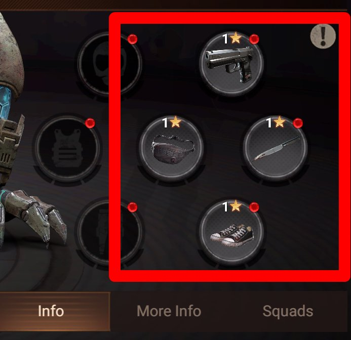

Premise & World
Post-Apocalyptic Shelter Command
Set in a near-future world overrun by the Infected, you command a survivor Shelter, clear fog-covered zones, rescue survivors, and rebuild civilization alongside an international Alliance.
Game Guide / Strategy & Survival
A structured handbook for IGG's hybrid zombie survival strategy game, featuring specialized Troop Barracks guides, early skirmish progression, and interactive combat calculators.
1. Game Introduction
Premise & World
Set in a near-future world overrun by the Infected, you command a survivor Shelter, clear fog-covered zones, rescue survivors, and rebuild civilization alongside an international Alliance.
Hybrid Genre
Unlike pure spreadsheet war games, Doomsday pairs lane-based Hero Tower Defense (Explore & Z-Virus stages) with real-time free-marching army control on a seamless 3D spherical map.
Progression Loop
Recruit specialized Commanders, research military tech, train T1–T6 troops, and fight for Metro Stations, Checkpoints, and cross-region events like Archipelago Raid and Genesis War.
2. Gameplay & Platforms
Supported Platforms
Core Gameplay Modes
3. Early Skirmish (Base Exploration)
Base Exploration Zone
Early progression inside your Shelter revolves around unlocking fog-covered skirmish plots, collecting supply crates, and rescuing key companions in the right sequence.

Step 01 · Norah Timing
Do not click Raise Grade to transform Norah into Legendary right away—only rescue her after you have collected 6 Stim Packs so you do not stall early progression.

Step 02 · Core Trio Lineup
Run the trio of Angela, Kris, and Michele for your skirmish lineup and level them up to Level 32 to clean the entire early exploration map effortlessly.

Step 03 · Adventure Gear
Focus your gear setup on Primary Weapon, Secondary Weapon (plus tactical pouch), and Boots to stack Adventure Attack stats and clear every skirmish stage with ease.

4. Basic Strategy
Rule 01 · Economy & VIP
Upgrade Headquarters, Research Lab, and Alliance Center first to unlock T4/T5 troops. Save Gems to reach VIP 6 (permanent 2nd builder queue) and VIP 9+ for daily Legendary Hero Fragments.
Rule 02 · Hero Focus
Choose one main specialization early—Rider, Infantry, or Ranged. Always max a Legendary hero's 1st skill (5-1-1-1) before ascending stars, and never split gold fragments across multiple heroes.
Rule 03 · Resource Discipline
Keep resource packs unopened in your Inventory so raiders cannot plunder them. Save Speedups, Hero Fragments, Carbon Steel, and Stamina to spend during Top Commander or Alliance Showdown.
Rule 04 · Alliance & Defense
Join a top-3 active Alliance immediately and teleport to their hive. During Kill Events or war days, always activate a Peace Shield or garrison troops inside Alliance Flags/Forts before logging off.